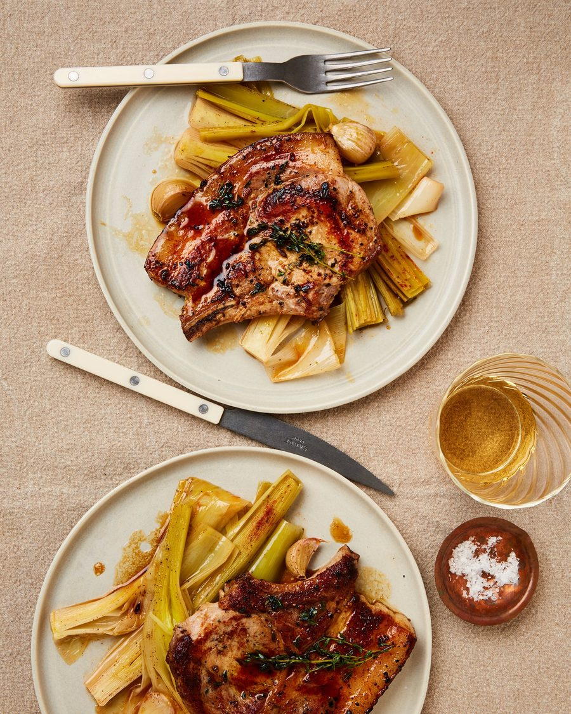

Pork chops with manzanilla-braised leeks

Spanish home cooking is all about simple, bold flavours that, when combined, bring out the best of each ingredient. These pork chops with sherry-braised leeks are a case in point: the slow-cooked leeks absorb the flavours of the sherry, chicken stock, smoky pimentón and garlic, and in the process soften and develop a sweet, mellow richness, while the golden-crusted chops, finished with a hint of thyme, bring an earthy, rustic and deeply satisfying warmth to proceedings.
Heat the oven to 170C (150C fan)/340F/gas 3½. Arrange the leeks in a single layer in a large roasting tin and drizzle with three tablespoons of the olive oil. Pour in the sherry and stock, then scatter with the pimentón and garlic cloves. Season, cover with foil and transfer to the hot oven to cook for 40 minutes.
Turn up the oven to 200C (180C fan)/390F/gas 6, and cook for another 20 minutes. Meanwhile, drizzle the pork chops with the remaining tablespoon of oil, then generously season on both sides. Put a heavy-based, ovenproof frying pan on a high heat and, once it’s good and hot, lay in the chops, add the thyme sprigs, and sear on both sides, until golden. Transfer the pan to the hot oven for five minutes to finish cooking, then remove and leave the chops to rest for at least five minutes more.
Serve the chops with the braised leeks and any resting juices.